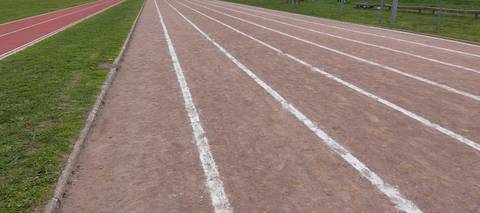
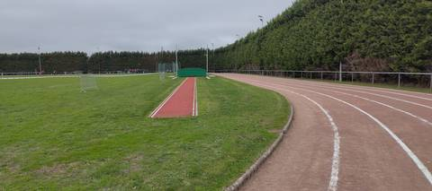
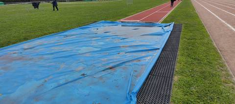
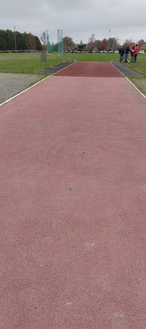
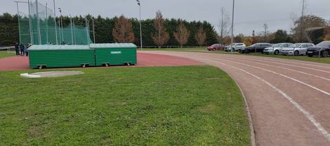
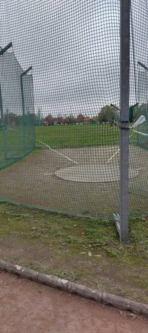
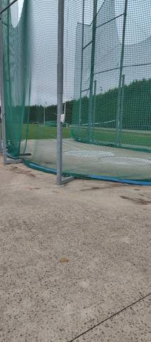
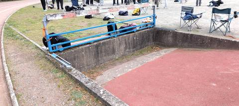

Franchement, c'est un super complexe sportif pour les athlètes. Il y a tous les agrès, il y a même du steeple, et c'est ouvert tout le temps. Le seul souci, c'est que la piste est en cendrée.
Stade d'Athletisme
Route Félix Praud, 44450 Saint-Julien-de-Concelles · Loire-Atlantique
Stade d'Athletisme est un équipement d'athlétisme situé à Saint-Julien-de-Concelles (Loire-Atlantique), en Pays de la Loire. Il dispose d'une piste de 400 m en cendrée / stabilisé, à 6 couloirs. On y trouve steeple, sautoir longueur, triple saut, sautoir hauteur, sautoir à la perche, lancer du poids, lancer du disque, lancer du marteau et lancer du javelot. Le site propose l'éclairage, des vestiaires et des douches. L'accès est libre.
Photos








Il manque sûrement une photo
Les sautoirs et les aires de lancer sont ce que la donnée publique décrit le plus mal, et ce qu'on photographie le moins. Un gros plan du sol, une perche bâchée, un bac de sable envahi : chacun ajoute ce qu'aucun champ ne porte.
Envoyer une photoSans compte GitHubPiste
- Revêtement
- Cendrée / stabilisé
- Développement
- 400 m
- Type de piste
- Anneau de stade d'athlétisme
- Couloirs
- 6
- Configuration
- Plein air
- Mise en service
- 1989
- Dernière rénovation
- 2004
Agrès recensés
- Steeple
- Sautoir longueur
- Triple saut
- Sautoir hauteur
- Sautoir à la perche
- Lancer du poids
- Lancer du disque
- Lancer du marteau
- Lancer du javelot
Accès & services
- Accès libre
- Oui
- Éclairage
- Oui
- Vestiaires
- Oui
- Douches
- Oui
- Sanitaires
- Oui
Visite du 8 novembre 2026, un dimanche en début d'après-midi : accès libre, on est entré sans rien franchir. Il y avait du monde sur le stade ce jour-là. Aucun panneau d'horaires n'a été relevé.
Avis des athlètes
Visite sur place le 8 novembre 2026. Revêtement de l'anneau confirmé au sol : cendrée, comme le déclare le recensement. Six couloirs sont tracés en blanc ; le recensement ne renseigne pas leur nombre. Le développement de 400 m est celui du recensement et n'a pas été remesuré. Ce que la fiche ne disait pas : malgré son anneau en cendrée, le stade porte l'ensemble des agrès d'athlétisme, vus sur place. Le long de la ligne droite court une seconde ligne droite, de couleur rouge, distincte de l'anneau. Les sauts disposent de pistes d'élan rouges ; un grand tapis de réception est laissé en place sous une bâche bleue tachée, posé à côté d'un caillebotis, et des coffres de rangement verts abritent d'autres tapis au bord de l'anneau. Les lancers ont une cage à haut filet vert sur aire bétonnée, avec un cercle et ses lignes de secteur, et un cercle de poids est aménagé dans la pelouse. Le steeple a sa rivière, à sec le jour de la visite, avec sa barrière fixe bleue à la peinture écaillée. L'anneau tourne autour d'une pelouse ; une haie de cyprès borde l'un des virages, et un parking longe l'autre côté du stade. Des mâts d'éclairage entourent l'anneau.
Autres sites du département
- Complexe Sportif le Zephyr
- Parc des Sports
- Complexe Sportif
- Stade Municipal
- Gymnase de Goulaine
- Ensemble Sportif Henri Michel
Signaler une erreur ou compléter la fiche
Réf. I441690009 · Source : Data ES + communauté — Data ES, ministère chargé des Sports, Licence Ouverte 2.0. Les données sont déclaratives et peuvent être incomplètes : vérifiez les conditions d'accès avant de vous déplacer.